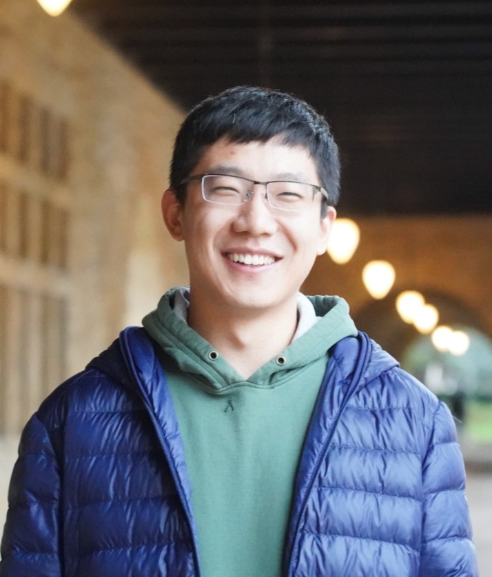

Goal-Aware Dynamic Multi-Agent Collaboration for Long-Horizon Tasks
Jie Ren
I am a Postdoctoral Associate at MIT CSAIL, working with Neil Thompson and Jonathan Rosenfeld. I received my Ph.D. in Computer Science from Michigan State University, advised by Jiliang Tang, and my B.E. from Tsinghua University.
My research aims to advance trustworthy AI through a deeper understanding of the behaviors, underlying mechanisms, and limitations of AI, extending from individual models to reasoning and agentic systems.
I was selected as an ML and Systems Rising Star (MLCommons) and a Rising Star in AI (KAUST), and I serve as an Area Chair for ICLR, ICML, and ARR.

News
- Oct 2026 Invited to serve as an Area Chair for ARR Oct. 2026.
- Oct 2026 Invited to serve as an Area Chair for ICML 2027.
- Sep 2026 Invited to serve as an Area Chair for ICLR 2027.
- Sep 2026 One paper accepted by NeurIPS 2026.
- May 2026 Glad to be recognized as a Gold Reviewer by ICML 2026.
- May 2026 One paper accepted by KDD 2026.
- Apr 2026 Selected as ML and Systems Rising Star, MLCommons.
- Jan 2026 I joined MIT CSAIL as a Postdoctoral Associate.
- Dec 2025 Selected as Rising Star in AI, KAUST, Saudi Arabia.
- Nov 2025 Received the NeurIPS Scholar Award.
- Nov 2025 One paper selected as oral presentation by NeurIPS Workshop on GenProCC.
- Sep 2025 One paper accepted by NeurIPS 2025!
- Aug 2025 Two papers accepted by EMNLP 2025!
- May 2025 I will start my internship at ByteDance in Summer 2025!
- May 2025 One paper accepted by ACL 2025!
- Feb 2025 One paper accepted by CVPR 2025!
- Jan 2025 One paper accepted by WWW 2025 (Oral)!
- Jan 2025 One paper accepted by AISTATS 2025!
- Nov 2024 One paper accepted by TMLR!
- Sep 2024 One paper accepted by EMNLP 2024!
- Aug 2024 I will start my internship at Amazon in Fall 2024!
- Jul 2024 My submission is accepted by ECAI 2024 Doctoral Consortium!
- Jul 2024 One paper accepted by ECCV 2024!
- May 2024 Two papers accepted by ACL 2024!
- Mar 2024 One paper accepted by NAACL 2024 Findings.
- Mar 2024 I will start my internship at Sony AI in March.
- Feb 2024 The preprint of our survey, Copyright Protection in Generative AI: A Technical Perspective, is released.
Research
Understanding why AI systems behave as they do is the thread that runs through my work: it guides my primary focus on data protection, and, together with lessons from that work, drives my recent expansion to reasoning and agentic systems.
My Trustworthy AI Focus
Data Protection in AI
Helping data owners protect their data, and model developers use data responsibly.
Research Philosophy
Understanding & Controlling AI Behaviors
Uncovering the mechanisms behind AI to guide targeted interventions.
Recent Expansion
Reliable Reasoning & Agentic Systems
Making LLM reasoning and agentic systems more reliable and efficient.
Preprints
TriAct: Learning When to Stop, Continue, and Sample for Adaptive Test-Time Scaling in Latent Reasoning
Beyond Ranking: Making Long-term Multi-modal Memory Addressable
Machine Unlearning for Large Language Models (Survey)
Copyright Protection in Generative AI: A Technical Perspective (Survey)
Publications
Early Signals, Strong Decisions: Prefix-Guided Sampling for Parallel Test-Time Scaling
Why Retrieval-Augmented Generation Fails: A Graph Perspective
Keeping an Eye on LLM Unlearning: The Hidden Risk and Remedy
Beyond Text: Unveiling Privacy Vulnerabilities in Multi-modal Retrieval-Augmented Generation
Mitigating the Privacy Issues in Retrieval-Augmented Generation (RAG) via Pure Synthetic Data
A General Framework to Enhance Fine-tuning-based LLM Unlearning
Six-CD: Benchmarking Concept Removals for Benign Text-to-image Diffusion Models
Self-Comparison for Dataset-Level Membership Inference in Large (Vision-)Language Models
Superiority of Multi-Head Attention in In-Context Linear Regression
AISTATS 2025Paper
DiffusionShield: A Watermark for Copyright Protection against Generative Diffusion Models
FT-Shield: A Watermark Against Unauthorized Fine-tuning in Text-to-image Diffusion Models
Stealthy Backdoor Attack via Confidence-driven Sampling
On the Generalization of Training-based ChatGPT Detection Methods
Unveiling and Mitigating Memorization in Text-to-image Diffusion Models through Cross Attention
Exploring Memorization in Fine-tuned Language Models
ACL 2024Paper
The Good and The Bad: Exploring Privacy Issues in Retrieval-Augmented Generation (RAG)
A Robust Semantics-based Watermark for Large Language Model against Paraphrasing
Sharpness-Aware Data Poisoning Attack
Neural Style Protection: Counteracting Unauthorized Neural Style Transfer
WACV 2024Paper
Transferable Unlearnable Examples
Probabilistic Categorical Adversarial Attack and Adversarial Training
ICML 2023Paper
Uniting Heterogeneity, Inductiveness, and Efficiency for Graph Representation Learning
TKDE 2021Paper
Workshops
EnTruth: Tracing the Unauthorized Dataset Usage in Diffusion Models
NeurIPS 2025 Workshop on GenProCCOralPaper
No papers match the selected areas.
Awards & Honors
- 2026ML and Systems Rising Star, MLCommons (39 selected worldwide)
- 2026Rising Star in AI, KAUST (25 selected worldwide; declined due to travel constraints)
- 2026ICML Gold Reviewer Award
- 2025NeurIPS Scholar Award
- 2025Graduate Experiential Education Fellowship, Michigan State University
- 2019Zijing Outstanding Instructor, Tsinghua University
- 2016Social Service Outstanding Scholarship, Tsinghua University
Teaching
- Fall 2023Teaching Assistant, CSE 881 Data Mining (graduate), Michigan State University
- Spring 2023Teaching Assistant, CSE 482 Big Data Analysis, Michigan State University
- 2019Instructor, International Undergraduate Freshmen Foundation Program, Tsinghua University
- 2016–2019Instructor, Summer School, Tsinghua University (2016, 2017, 2019)
- Fall 2016Teaching Assistant, Introduction to the Social Service of College Students, Tsinghua University
Service
- Area Chair
- ICLR 2027, ICML 2027, ARR 2027, NeurIPS GenAI4Health Workshop 2026
- PC Member
- NeurIPS, ICLR, ICML, AAAI, ACL, EMNLP, NAACL, CVPR, ICCV, ECCV, WACV, WSDM, CIKM, WWW, RecSys
- Journals
- TKDD, TKDE, TIST, TIP, TIFS, TMLR, ACM Computing Surveys
- Volunteer
- WWW 2025, KDD 2022; Organizer, Girls Math and Science Day at MSU 2023